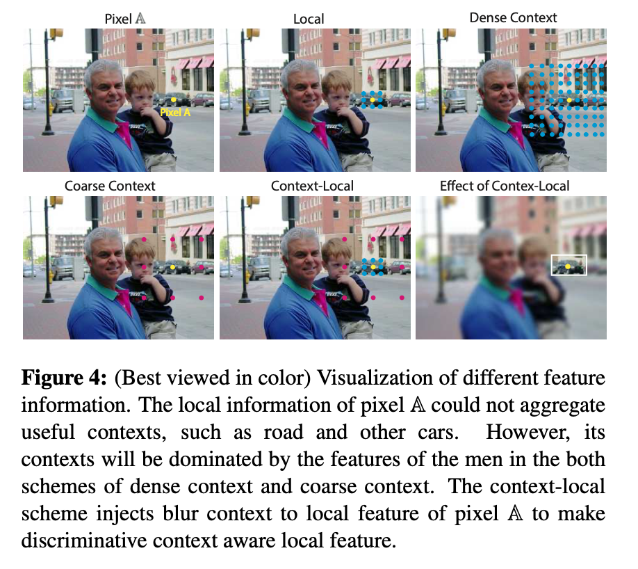
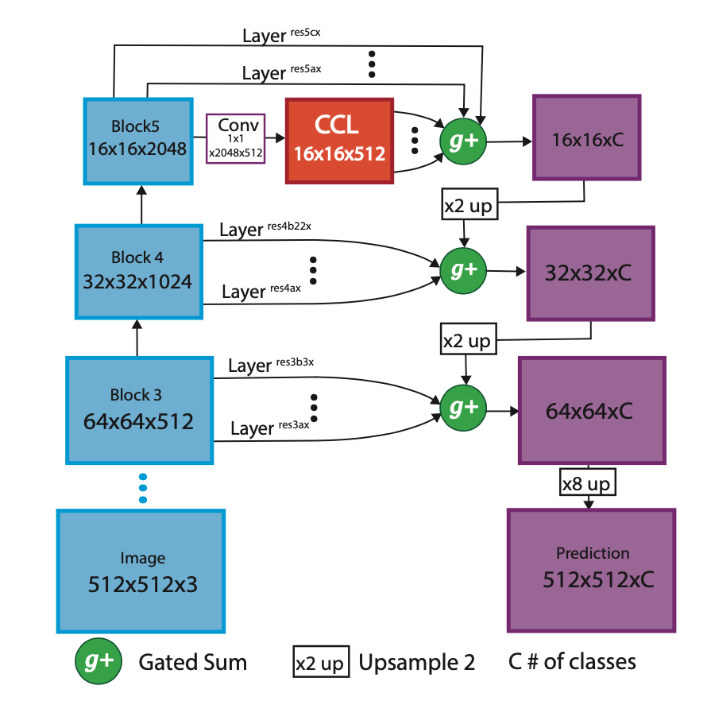
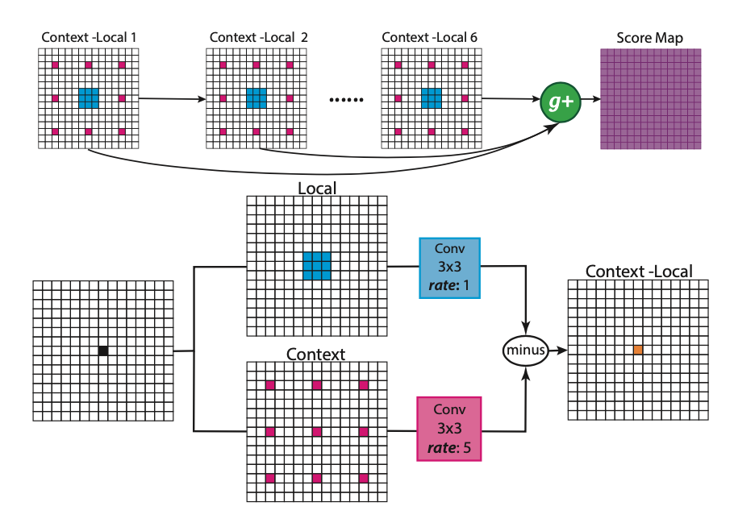
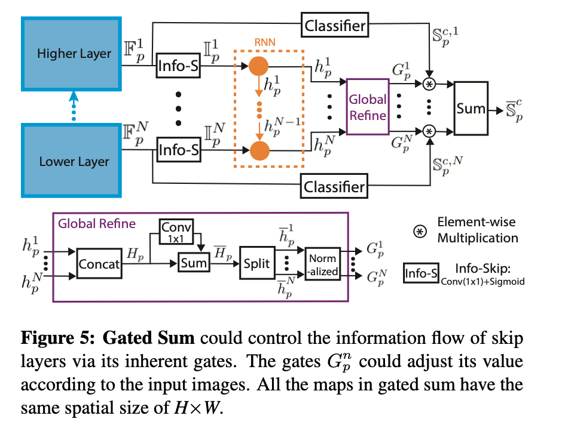

CVPR2018的一篇语意分割的论文，整体读起来的感觉就是很复杂！主要内容的话还是围绕分割任务中context信息/local信息的获取问题，融合了CNN/RNN整个结构看起来相当的复杂。好在最后的点看上去还可以。

作者首先阐述了针对语意分割需要解决的问题，比如上图是论文解释问题的一张图，对于pixel a那么很显然需要把它分类为car，但是在cnn处理的过程中通常整张图的特征会被占主体的一对父子所主导，因此往往对于pixel a的分类不是很准，所以需要特别注意提取pixel a的local特征，但是只有local特征很显然也是不行的，pixel a附近的context信息是很重要的起码可以形成明显的区分度帮助模型学习，所以论文核心解决的问题就是context信息/local信息的获取/使用问题。
先看下论文所提方法的pipeline然后在具体说一下novelty的点,直观上看就是在一般的分割pipeline基础上增加了一个ccl模块和g+(gated sum)模块,ccl用来处理论文提出的问题关于context和local信息的使用问题，gated sum可以理解为multi scale的加权问题，是对传统的multi scale通过sum/concat方法的优化:

论文的两个novelty点:
- Context Contrasted Local (CCL): 简言之就是context和local信息相减来突出local信息同时不失context的信息(CCL = Fl(F, Θl) − Fc(F, Θc))，context信息利用dilation conv来解决，local信息就是普通的conv:

然后为了处理multi scale的问题多个ccl block存在一个级联的过程，因为conv操作本身多次重复之后就是对feature有multi scale的作用。
Gated Sum: 这个操作作者提出来主要是考虑到一般的分割任务中对multi scale的feature通常采用sum或者concat的方法进行融合，作者claim对于不同的feature有可能一部分是有害的所以需要加以甄别，那么gated sum可以理解为一个对multi feature进行加权融合的过程，实现方法很复杂…用rnn做的，有兴趣的同学可以细看论文，这里不赘述，是RNN的常规应用，只是细节的确很是繁琐:

最后点还是不错的，在coco上mean iou能到0.357，在pascal context上可以到0.516，另外看了下ablation，gated sum的操作还是可以带来2-3个点的涨幅的。